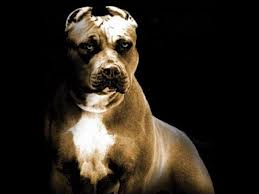

jordi rey
American pitbull
 
L'American Pit Bull Terrier (o Pit Bull) è l'incrocio di due razze inglesi il English white terrier e l'Old Bulldog a partire dalla fine del XIX secolo, anche se secondo alcuni autori, come Richard Stratton, si tratta dell'autentico bull dog da lavoro rinascimentale senza apporto di altre razze, non riconosciuta come razza dalla FCI (Federazione Cinologica Internazionale) né dall'ENCI (Ente Nazionale Cinofilia Italiana). Mentre è riconosciuta la razza di American Pit Bull Terrier dell'UKC (United Kennel Club) e della ADBA (American Dog Breeders Association), due federazioni che concepiscono il cane in modo differente, mantenendo standard morfo-caratteriali leggermente diversi fra loro.
pastore tedesco